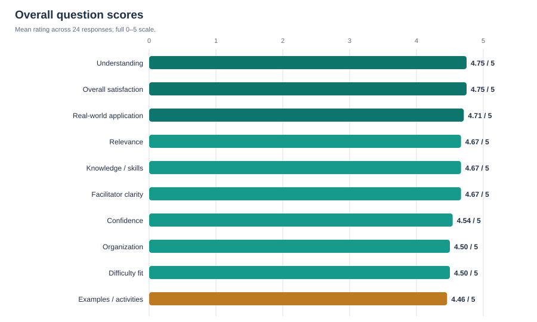
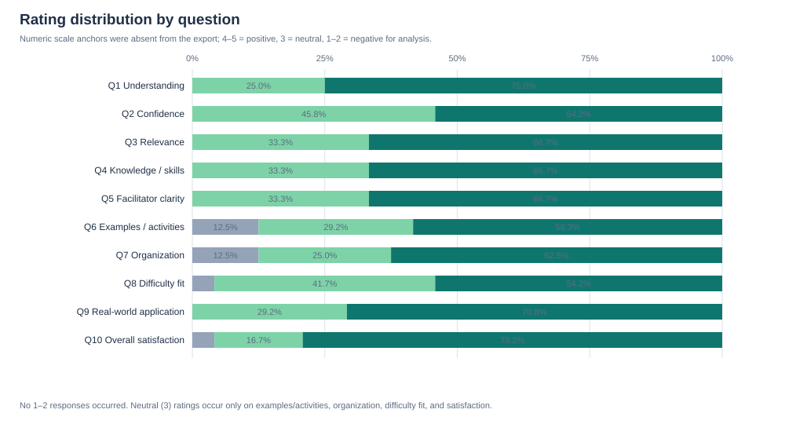
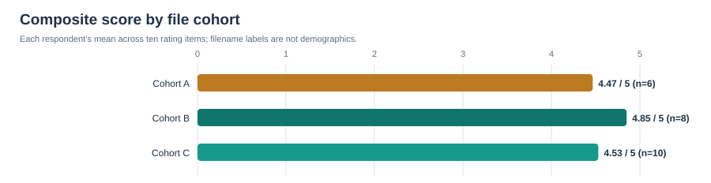
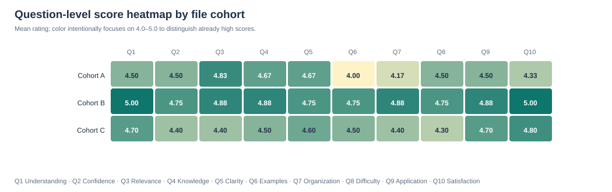
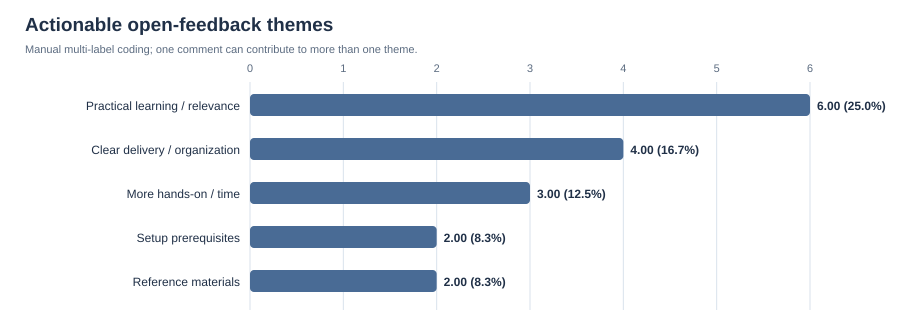

Senior-management report · Generated from the three supplied Post-Workshop CSV exports only
Post-Workshop Survey Analysis
24 completed responses · 09 June–30 July 2026 (GMT+8) · 10 rating items + 1 open-text item
1. Executive Summary
This consolidated post-workshop survey is exceptionally favorable on immediate reactions and self-reported learning. All 240 rating cells are complete; 232 are 4–5, 8 are 3, and none are 1–2.
- Understanding and satisfaction lead: both average 4.75/5 and 4.75/5, respectively.
- Application is strong: real-world application averages 4.71/5; every respondent chose 4 or 5.
- Practical delivery is the priority: examples/activities is the relative low point at 4.46/5, with three comments asking for more time, implementation depth, or exercises.
- Transfer confidence lags comprehension: confidence is 4.54/5 versus understanding at 4.75/5—favorable, but an opportunity for guided practice.
- Delivery varies by file cohort: composite means range from 4.47 to 4.85. Treat this as a session-improvement signal, not a departmental or person-level judgment.
2. Respondent Demographics
No department, team, job level, experience, location, role, or other demographic field was collected. No response rate can be computed because the invitation/attendance denominator is unknown. Filename labels are used only as anonymous file cohorts.
| File cohort | n | Collection window | Composite mean | Median | Sample SD | Satisfaction |
|---|---|---|---|---|---|---|
| Cohort A | 6 | 09 Jun–10 Jun 2026 | 4.47 | 4.50 | 0.59 | 4.33 |
| Cohort B | 8 | 16 Jun–16 Jun 2026 | 4.85 | 4.90 | 0.18 | 5.00 |
| Cohort C | 10 | 28 Jul–30 Jul 2026 | 4.53 | 4.55 | 0.36 | 4.80 |
Observation: Cohort B is the highest-scoring file cohort (4.85/5); Cohort A is lowest (4.47/5). Differences may reflect topic, timing, cohort composition, or delivery conditions that were not captured.
3. Question-by-Question Analysis
Question ranking:
- #1 Understanding: 4.75/5
- #1 Overall satisfaction: 4.75/5
- #3 Real-world application: 4.71/5
- #4 Relevance: 4.67/5
- #4 Knowledge / skills: 4.67/5
- #4 Facilitator clarity: 4.67/5
- #7 Confidence: 4.54/5
- #8 Organization: 4.50/5
- #8 Difficulty fit: 4.50/5
- #10 Examples / activities: 4.46/5
| Q | Question | Mean | Median | Mode | SD | Range | 5 | 4 | 3 | 2 | 1 | Positive | Neutral | Negative |
|---|---|---|---|---|---|---|---|---|---|---|---|---|---|---|
| Q1 | Understanding | 4.75 | 5.0 | 5 | 0.44 | 4–5 | 18 (75.0%) | 6 (25.0%) | 0 (0.0%) | 0 (0.0%) | 0 (0.0%) | 100.0% | 0.0% | 0.0% |
| Q2 | Confidence | 4.54 | 5.0 | 5 | 0.51 | 4–5 | 13 (54.2%) | 11 (45.8%) | 0 (0.0%) | 0 (0.0%) | 0 (0.0%) | 100.0% | 0.0% | 0.0% |
| Q3 | Relevance | 4.67 | 5.0 | 5 | 0.48 | 4–5 | 16 (66.7%) | 8 (33.3%) | 0 (0.0%) | 0 (0.0%) | 0 (0.0%) | 100.0% | 0.0% | 0.0% |
| Q4 | Knowledge / skills | 4.67 | 5.0 | 5 | 0.48 | 4–5 | 16 (66.7%) | 8 (33.3%) | 0 (0.0%) | 0 (0.0%) | 0 (0.0%) | 100.0% | 0.0% | 0.0% |
| Q5 | Facilitator clarity | 4.67 | 5.0 | 5 | 0.48 | 4–5 | 16 (66.7%) | 8 (33.3%) | 0 (0.0%) | 0 (0.0%) | 0 (0.0%) | 100.0% | 0.0% | 0.0% |
| Q6 | Examples / activities | 4.46 | 5.0 | 5 | 0.72 | 3–5 | 14 (58.3%) | 7 (29.2%) | 3 (12.5%) | 0 (0.0%) | 0 (0.0%) | 87.5% | 12.5% | 0.0% |
| Q7 | Organization | 4.50 | 5.0 | 5 | 0.72 | 3–5 | 15 (62.5%) | 6 (25.0%) | 3 (12.5%) | 0 (0.0%) | 0 (0.0%) | 87.5% | 12.5% | 0.0% |
| Q8 | Difficulty fit | 4.50 | 5.0 | 5 | 0.59 | 3–5 | 13 (54.2%) | 10 (41.7%) | 1 (4.2%) | 0 (0.0%) | 0 (0.0%) | 95.8% | 4.2% | 0.0% |
| Q9 | Real-world application | 4.71 | 5.0 | 5 | 0.46 | 4–5 | 17 (70.8%) | 7 (29.2%) | 0 (0.0%) | 0 (0.0%) | 0 (0.0%) | 100.0% | 0.0% | 0.0% |
| Q10 | Overall satisfaction | 4.75 | 5.0 | 5 | 0.53 | 3–5 | 19 (79.2%) | 4 (16.7%) | 1 (4.2%) | 0 (0.0%) | 0 (0.0%) | 95.8% | 4.2% | 0.0% |
Distribution cells are count (percentage). All ten questions have a modal rating of 5. Quantitative/checkbox/multiple-choice questions beyond the 10 Likert-style ratings do not exist in the export.

Chart 1 — ranks the ten items by mean on the full 0–5 scale.

Chart 2 — shows the full distribution. The small neutral pockets identify relative weak areas.
Interpretation for every question
Q1 — I have a better understanding of the workshop topic after attending. 4.75/5
Distribution: 5: 18 (75.0%), 4: 6 (25.0%), 3: 0 (0.0%), 2: 0 (0.0%), 1: 0 (0.0%). Median: 5.0; mode: 5; observed range: 4–5. Immediate comprehension is consistently favorable: all ratings are 4–5.
Q2 — I feel more confident applying this topic after the workshop. 4.54/5
Distribution: 5: 13 (54.2%), 4: 11 (45.8%), 3: 0 (0.0%), 2: 0 (0.0%), 1: 0 (0.0%). Median: 5.0; mode: 5; observed range: 4–5. Positive but lower than understanding; use practice to convert understanding into confidence.
Q3 — The workshop content was relevant to my role, studies, or responsibilities. 4.67/5
Distribution: 5: 16 (66.7%), 4: 8 (33.3%), 3: 0 (0.0%), 2: 0 (0.0%), 1: 0 (0.0%). Median: 5.0; mode: 5; observed range: 4–5. Every rating is 4–5, indicating strong immediate role/study relevance.
Q4 — The workshop improved my knowledge or skills in this topic. 4.67/5
Distribution: 5: 16 (66.7%), 4: 8 (33.3%), 3: 0 (0.0%), 2: 0 (0.0%), 1: 0 (0.0%). Median: 5.0; mode: 5; observed range: 4–5. All ratings are positive; this is self-reported gain, not a pre/post skills test.
Q5 — The facilitator explained the topic clearly. 4.67/5
Distribution: 5: 16 (66.7%), 4: 8 (33.3%), 3: 0 (0.0%), 2: 0 (0.0%), 1: 0 (0.0%). Median: 5.0; mode: 5; observed range: 4–5. All ratings are positive and comments corroborate clear explanation.
Q6 — The examples, demonstrations, or activities helped me understand the topic. 4.46/5
Distribution: 5: 14 (58.3%), 4: 7 (29.2%), 3: 3 (12.5%), 2: 0 (0.0%), 1: 0 (0.0%). Median: 5.0; mode: 5; observed range: 3–5. Lowest mean and 12.5% neutral: the clearest priority for more implementation, demonstrations, and exercises.
Q7 — The workshop was well organized and easy to follow. 4.50/5
Distribution: 5: 15 (62.5%), 4: 6 (25.0%), 3: 3 (12.5%), 2: 0 (0.0%), 1: 0 (0.0%). Median: 5.0; mode: 5; observed range: 3–5. Second-lowest tier with 12.5% neutral; lower score clusters in the Cohort A file cohort alongside setup comments.
Q8 — The workshop difficulty level was appropriate for my current knowledge. 4.50/5
Distribution: 5: 13 (54.2%), 4: 10 (41.7%), 3: 1 (4.2%), 2: 0 (0.0%), 1: 0 (0.0%). Median: 5.0; mode: 5; observed range: 3–5. 95.8% positive; offer optional preparation and differentiated practice for fit.
Q9 — I can apply what I learned from this workshop in real situations. 4.71/5
Distribution: 5: 17 (70.8%), 4: 7 (29.2%), 3: 0 (0.0%), 2: 0 (0.0%), 1: 0 (0.0%). Median: 5.0; mode: 5; observed range: 4–5. All ratings are positive; confirm transfer later through a 30/60-day follow-up.
Q10 — Overall, I am satisfied with the workshop. 4.75/5
Distribution: 5: 19 (79.2%), 4: 4 (16.7%), 3: 1 (4.2%), 2: 0 (0.0%), 1: 0 (0.0%). Median: 5.0; mode: 5; observed range: 3–5. Joint-highest mean; ceiling effects make satisfaction less sensitive to small improvements.
4. AI Adoption Analysis
| Requested AI measure | What can be concluded |
|---|---|
| Current adoption / tools / frequency | Not collected. |
| Confidence / proficiency / training effectiveness | Only generic workshop confidence is collected; it cannot be attributed to AI. |
| Barriers / high- and low-use departments | Not collected; no department field exists. |
| Opportunity | Add tool, task, frequency, skill, barrier, and 30/60-day use questions if AI adoption is a strategic objective. |
5. Cross Analysis
Cohort × score
Immediate composite scores: Cohort A 4.47, Cohort B 4.85, Cohort C 4.53. Cohort A’s lowest question means are examples/activities (4.00) and organization (4.17), consistent with its setup/hands-on comments.
Confidence × application
Exploratory Spearman association: ρ=0.51, two-sided permutation p=0.022 (50,000 shuffles; below the conventional unadjusted 0.05 threshold). Higher confidence is associated with higher perceived ability to apply learning. It is a small, post-session, non-random sample; do not infer causation or generalize to employees at large.

Chart 3 — file-cohort composite scores; not a demographic or facilitator ranking.

Chart 4 — relative variation by question and cohort. The color scale is zoomed to 4.0–5.0 for readability.
6. Trends, Patterns, and Risk Signals
- Ceiling effect: overall median and mode are both 5; satisfaction is useful for affirmation but weak at distinguishing marginal gains.
- Transfer gap: understanding exceeds confidence by 0.21 points. Use practice and post-session support to close it.
- Operational friction: prerequisites, package dependencies, and materials requests point to preventable setup/support cost.
- High-performing group: Cohort B is strong across all items (4.75–5.00); document its delivery conditions as a reusable workshop playbook.
- High-risk data gap: no demographics, topic, denominators, or delayed outcomes means leadership cannot assess reach, equity, usage, or ROI.
7. Sentiment Analysis
| Primary tone | Comments | Share | Definition |
|---|---|---|---|
| Positive | 21 | 87.5% | Praise or positive benefit; can also contain a suggestion. |
| Neutral / action-oriented | 3 | 12.5% | Concrete request without negative language. |
| Negative | 0 | 0.0% | No comments coded negative. |
| Theme | Comments | Share of 24 | Reading |
|---|---|---|---|
| Practical learning / relevance | 6 | 25.0% | Multi-label; theme counts need not total 24. |
| Clear delivery / organization | 4 | 16.7% | Multi-label; theme counts need not total 24. |
| More hands-on / time | 3 | 12.5% | Multi-label; theme counts need not total 24. |
| Setup prerequisites | 2 | 8.3% | Multi-label; theme counts need not total 24. |
| Reference materials | 2 | 8.3% | Multi-label; theme counts need not total 24. |
| General endorsement | 11 | 45.8% | Multi-label; theme counts need not total 24. |
Overall sentiment score: +87.5 on a −100 to +100 net-sentiment scale. Tone is appreciative and constructive rather than frustrated. Common positive words: good (13), well (3), clear (1), clearly (1), useful (2), informative (3), new (2). Common concerns: more implementation/time (3 comments), setup prerequisites (2), and post-session references (2).
Representative anonymized feedback: “Gained good knowledge and super useful on daily task.” · “The hands-on session could also include more activities and exercises.” · “Share slides after workshop.” · “good if can share some n8n cheat sheet for reference...”

Chart 5 — actionable feedback themes. A word cloud was not used as a primary decision chart: with only 24 short comments, generic terms such as “good” would obscure the actionable requests.
8. Recommendations
| Priority / horizon | Action | Impact | Ease | Expected ROI |
|---|---|---|---|---|
| Quick win · ≤1 month | Publish a standard pre-workshop setup checklist: versions, package dependencies, access test, and troubleshooting route. | High | High | High |
| Quick win · ≤1 month | Share slides, cheat sheet, sample files, and recording/recap within 48 hours. | High | High | High |
| Quick win · ≤1 month | Add a short guided practice block and a final real-work use case. | High | Medium | High |
| Medium term · 3–6 months | Create a reusable delivery playbook from the strongest cohort: agenda, prep, examples, facilitator guide, and feedback loop. | High | Medium | High |
| Medium term · 3–6 months | Run an optional “v2” lab/office hour focused on implementation and participant use cases. | High | Medium | High |
| Medium term · 3–6 months | Redesign the survey with topic, role/team, experience, scale anchors, and a 30/60-day transfer question. | High | Medium | High |
| Long term · 6–12 months | Measure adoption/ROI with behavior, time saved, quality, risk, and use-case data—especially if these are AI/automation workshops. | High | Medium | High |
9. Management Insights
- Focus: convert strong satisfaction into sustained application; prioritize practice, prerequisites, and reusable resources.
- Biggest risk: using a high immediate satisfaction score as a proxy for long-term adoption or business value.
- Opportunity: standardize the delivery conditions behind the Cohort B cohort and offer a second-level implementation lab.
- Departments needing attention: cannot be identified. Do not label a cohort as a department without a department field.
- Employee communication: acknowledge the feedback, confirm setup guides/materials and more hands-on practice, and explain how 30/60-day outcomes will be followed up.
10. Presentation-Ready Summary
11. Visualizations
Five editable SVG charts are generated in charts/: question means, rating distribution, cohort composite scores, cohort heatmap, and actionable feedback themes. Pie, radar, treemap, line, and word-cloud formats were not used because this is a small, cross-sectional, non-hierarchical dataset; they would add visual complexity without stronger decisions.
12. Statistical and Data-Quality Insights
| Measure | Result | Interpretation |
|---|---|---|
| Overall mean / median / mode | 4.62 / 5.0 / 5 | Responses cluster at the top of the scale. |
| Overall sample SD | 0.55 | Low dispersion; strong ceiling effect. |
| Missing ratings | 0 of 240 (0.0%) | Every rating response is present. |
| Missing comments | 0 of 24 (0.0%) | All respondents supplied a comment. |
| Duplicates | No duplicate timestamps observed | Anonymous data cannot rule out repeat respondents beyond this check. |
| Response rate | Not calculable | Eligible/invited attendee count absent. |
| Significance | Confidence–application ρ=0.51, permutation p=0.022 | Exploratory only; small non-random sample and ordinal ceiling effects apply. |
13. Final Conclusion
Overall health: strong immediate reaction, relevance, and self-reported learning/application. Biggest strengths: understanding, satisfaction, relevance, and perceived applicability. Biggest weaknesses: not poor scores, but relative gaps in hands-on examples, session organization/setup, and confidence transfer. Top five priorities: (1) pre-workshop setup guide, (2) reusable materials, (3) more guided practice, (4) implementation-focused follow-up, and (5) a measurement redesign with delayed outcomes and segmentation. Next step: implement the quick wins before the next cohort, then run a 30/60-day follow-up to test whether immediate satisfaction becomes actual application.
This public version intentionally excludes raw response exports. It contains aggregated and anonymized analysis only.